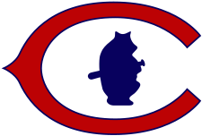
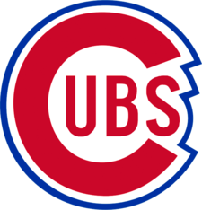
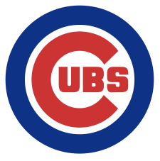

Some of the Cubs Logos Over Time
The Cubs Logo Starting in 1903
This is the first logo the Cubs ever used while being called the "Cubs"! Before that, they had gone through many name changes, some including the Chicago White Stockings, and the rather tasteless Chicago Orphans
The Cubs Logo Starting in 1909
The Cubs Logo Starting in 1920
The Cubs Logo Starting in 1941
The Current Cubs Logo Starting in 1979
The Cubs have had this logo since 1979, and the 2024 season will mark the 45th anniversary of the logo